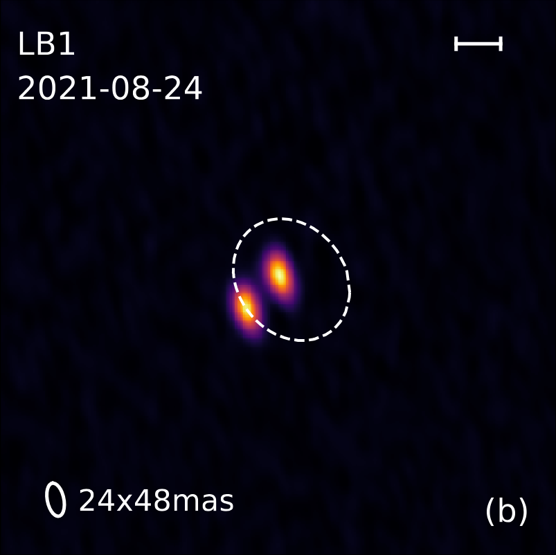

DMOST: Disks around the MOST common stars
I am leading the ALMA Large Program DMOST (ID:2025.1.00324.L; PI: Kurtovic, Nicolas), which aims to study the disks of young very low mass stars. We will explore the conditions for planet formation around these objects.
List of ALMA Large Programs.
MINDS: MIRI mid-INfrared Disk Survey.
As part of a guaranteed time observations program MINDS (GTO:1282; PI: Henning, Thomas), we observed tens of disks with JWST/MIRI-MRS to study the emission of their inner disks. My latest work as part of MINDS was studying the emission of the binary systems.
MINDS Binaries: ADS
AGE-PRO: The ALMA Survey of Gas Evolution of PROtoplanetary Disks
I am a member of the ALMA Large Program AGE-PRO (ID:2021.1.00128.L, PI: Zhang, Ke), where we explored the evolution of disk properties with a sample spanning three star forming regions. Check my paper analyzing the evolution of the dust emission. I also have a follow-up program with ALMA!
AGE-PRO dust evolution: ADS
{kind=link}
{kind=link}
{kind=link}
{kind=link}